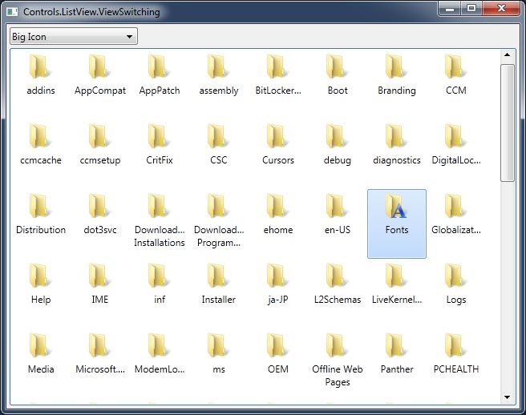
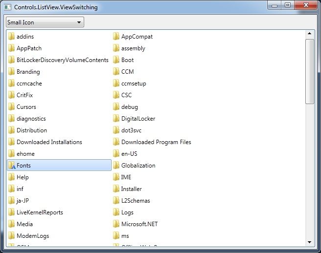
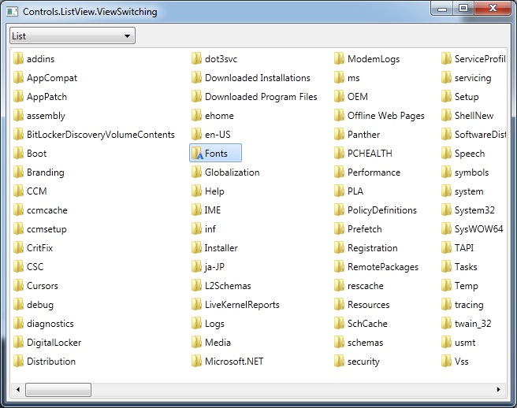
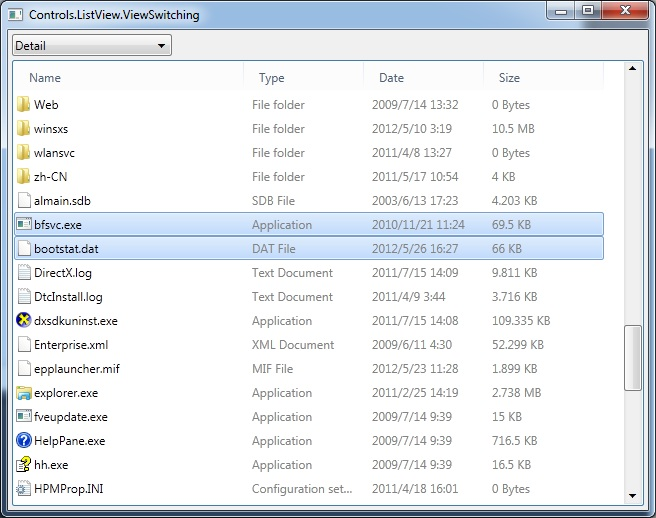
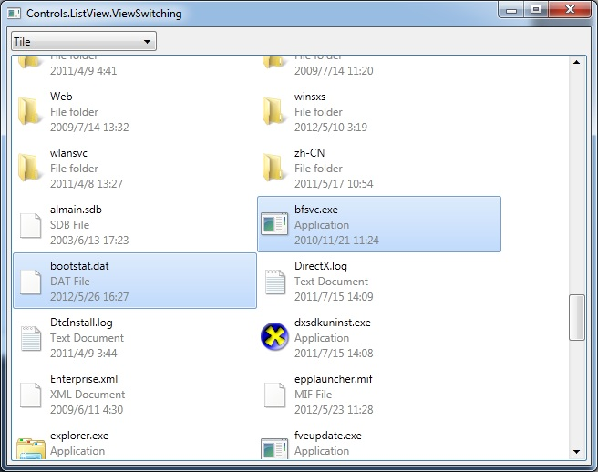
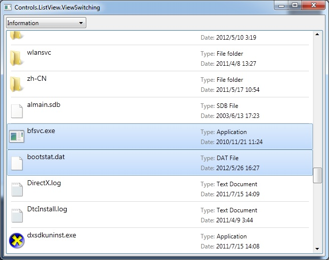

---- GPU Accelerated C++ User Interface |
|||||
| HOME | GETTING START | DEMOS | DOWNLOAD | DOCUMENT | CONTACT |
ListView.ViewSwitching     
#include "..\..\Public\Source\GacUI.h"
#include <ShlObj.h>
using namespace vl::collections;
int CALLBACK WinMain(HINSTANCE hInstance, HINSTANCE hPrevInstance, LPSTR lpCmdLine, int CmdShow)
{
return SetupWindowsDirect2DRenderer();
}
extern void FillData(GuiListView* listView);
/***********************************************************************
ViewSwitchingWindow
***********************************************************************/
class ViewSwitchingWindow : public GuiWindow
{
private:
GuiListView* listView;
GuiComboBoxListControl* comboView;
void comboView_SelectedIndexChanged(GuiGraphicsComposition* sender, GuiEventArgs& arguments)
{
switch(comboView->GetSelectedIndex())
{
case 0:
listView->ChangeItemStyle(new list::ListViewBigIconContentProvider);
break;
case 1:
listView->ChangeItemStyle(new list::ListViewSmallIconContentProvider);
break;
case 2:
listView->ChangeItemStyle(new list::ListViewListContentProvider);
break;
case 3:
listView->ChangeItemStyle(new list::ListViewDetailContentProvider);
break;
case 4:
listView->ChangeItemStyle(new list::ListViewTileContentProvider);
break;
case 5:
listView->ChangeItemStyle(new list::ListViewInformationContentProvider);
break;
}
}
public:
ViewSwitchingWindow()
:GuiWindow(GetCurrentTheme()->CreateWindowStyle())
{
this->SetText(L"Controls.ListView.ViewSwitching");
GuiTableComposition* table=new GuiTableComposition;
table->SetCellPadding(4);
table->SetAlignmentToParent(Margin(0, 0, 0, 0));
table->SetRowsAndColumns(2, 1);
table->SetRowOption(0, GuiCellOption::MinSizeOption());
table->SetRowOption(1, GuiCellOption::PercentageOption(1.0));
table->SetColumnOption(0, GuiCellOption::PercentageOption(1.0));
{
GuiCellComposition* cell=new GuiCellComposition;
table->AddChild(cell);
cell->SetSite(0, 0, 1, 1);
GuiTextList* comboSource=g::NewTextList();
comboSource->GetItems().Add(L"Big Icon");
comboSource->GetItems().Add(L"Small Icon");
comboSource->GetItems().Add(L"List");
comboSource->GetItems().Add(L"Detail");
comboSource->GetItems().Add(L"Tile");
comboSource->GetItems().Add(L"Information");
comboSource->SetHorizontalAlwaysVisible(false);
comboView=g::NewComboBox(comboSource);
comboView->SetSelectedIndex(0);
comboView->GetBoundsComposition()->SetAlignmentToParent(Margin(0, 0, -1, 0));
comboView->GetBoundsComposition()->SetPreferredMinSize(Size(160, 0));
comboView->SelectedIndexChanged.AttachMethod(this, &ViewSwitchingWindow::comboView_SelectedIndexChanged);
cell->AddChild(comboView->GetBoundsComposition());
}
{
GuiCellComposition* cell=new GuiCellComposition;
table->AddChild(cell);
cell->SetSite(1, 0, 1, 1);
listView=g::NewListViewBigIcon();
listView->GetBoundsComposition()->SetAlignmentToParent(Margin(0, 0, 0, 0));
listView->SetHorizontalAlwaysVisible(false);
listView->SetVerticalAlwaysVisible(false);
listView->SetMultiSelect(true);
cell->AddChild(listView->GetBoundsComposition());
}
this->GetBoundsComposition()->AddChild(table);
FillData(listView);
// set the preferred minimum client size
this->GetBoundsComposition()->SetPreferredMinSize(Size(640, 480));
// call this to calculate the size immediately if any indirect content in the table changes
// so that the window can calcaulte its correct size before calling the MoveToScreenCenter()
this->ForceCalculateSizeImmediately();
// move to the screen center
this->MoveToScreenCenter();
}
};
/***********************************************************************
FillData
***********************************************************************/
void SearchDirectoriesAndFiles(const WString& path, List<WString>& directories, List<WString>& files)
{
// Use FindFirstFile, FindNextFile and FindClose to enumerate all directories and files
WIN32_FIND_DATA findData;
HANDLE findHandle=INVALID_HANDLE_VALUE;
while(true)
{
if(findHandle==INVALID_HANDLE_VALUE)
{
WString searchPath=path+L"\\*";
findHandle=FindFirstFile(searchPath.Buffer(), &findData);
if(findHandle==INVALID_HANDLE_VALUE)
{
break;
}
}
else
{
BOOL result=FindNextFile(findHandle, &findData);
if(result==0)
{
FindClose(findHandle);
break;
}
}
if(findData.dwFileAttributes & FILE_ATTRIBUTE_DIRECTORY)
{
if(wcscmp(findData.cFileName, L".")!=0 && wcscmp(findData.cFileName, L"..")!=0)
{
directories.Add(findData.cFileName);
}
}
else
{
files.Add(findData.cFileName);
}
}
Func<vint(WString a, WString b)> comparer=[](WString a, WString b){return _wcsicmp(a.Buffer(), b.Buffer());};
CopyFrom(directories.Wrap(), directories.Wrap()>>OrderBy(comparer));
CopyFrom(files.Wrap(), files.Wrap()>>OrderBy(comparer));
}
Ptr<GuiImageData> GetFileIcon(const WString& fullPath, UINT uFlags)
{
// Use SHGetFileInfo to get the correct icons for the specified directory or file.
SHFILEINFO info;
DWORD result=SHGetFileInfo(fullPath.Buffer(), 0, &info, sizeof(SHFILEINFO), uFlags);
Ptr<GuiImageData> imageData;
if(result)
{
<INativeImage> image=windows::CreateImageFromHICON(info.hIcon);
if(image)
{
imageData=new GuiImageData(image, 0);
}
DestroyIcon(info.hIcon);
}
return imageData;
}
void FillListViewItem(Ptr<list::ListViewItem> item, const WString& fullPath)
{
{
// Get large icon.
item->largeImage=GetFileIcon(fullPath, SHGFI_LARGEICON | SHGFI_ICON);
// Get small icon.
item->smallImage=GetFileIcon(fullPath, SHGFI_SMALLICON | SHGFI_ICON);
}
{
// Get file type name and display name.
SHFILEINFO info;
DWORD result=SHGetFileInfo(fullPath.Buffer(), 0, &info, sizeof(SHFILEINFO), SHGFI_TYPENAME | SHGFI_DISPLAYNAME);
WString type;
WString displayName;
if(result)
{
displayName=info.szDisplayName;
type=info.szTypeName;
}
item->text=displayName;
item->subItems.Add(type);
}
// Get file attributes.
WIN32_FILE_ATTRIBUTE_DATA info;
BOOL result=GetFileAttributesEx(fullPath.Buffer(), GetFileExInfoStandard, &info);
if(result)
{
{
// Get the localized string for the file last write date.
FILETIME localFileTime;
SYSTEMTIME localSystemTime;
FileTimeToLocalFileTime(&info.ftLastWriteTime, &localFileTime);
FileTimeToSystemTime(&localFileTime, &localSystemTime);
// Get the correct locale
wchar_t localeName[LOCALE_NAME_MAX_LENGTH]={0};
GetSystemDefaultLocaleName(localeName, sizeof(localeName)/sizeof(*localeName));
// Get the localized date string
wchar_t dateString[100]={0};
GetDateFormatEx(localeName, DATE_SHORTDATE, &localSystemTime, NULL, dateString, sizeof(dateString)/sizeof(*dateString), NULL);
// Get the localized time string
wchar_t timeString[100]={0};
GetTimeFormatEx(localeName, TIME_FORCE24HOURFORMAT | TIME_NOSECONDS, &localSystemTime, NULL, timeString, sizeof(timeString)/sizeof(*timeString));
// Write the Date column
item->subItems.Add(dateString+WString(L" ")+timeString);
}
{
// Get the string for file size
LARGE_INTEGER li;
li.HighPart=info.nFileSizeHigh;
li.LowPart=info.nFileSizeLow;
WString unit;
double size=0;
if(li.QuadPart<=1024*1024*1024)
{
unit=L" GB";
size=(double)li.QuadPart/(1024*1024*1024);
}
else if(li.QuadPart<=1024*1024)
{
unit=L" MB";
size=(double)li.QuadPart/(1024*1024);
}
else if(li.QuadPart<=1024)
{
unit=L" KB";
size=(double)li.QuadPart/1024;
}
else
{
unit=L" Bytes";
size=(double)li.QuadPart;
}
WString sizeString=ftow(size);
const wchar_t* reading=sizeString.Buffer();
const wchar_t* point=wcschr(sizeString.Buffer(), L'.');
if(point)
{
const wchar_t* max=reading+sizeString.Length();
point+=4;
if(point<max) point=max;
sizeString=sizeString.Left(point-reading);
}
// Write to the Size column
item->subItems.Add(sizeString+unit);
}
}
}
void FillList(GuiListView* listView, const WString& path, List<WString>& files)
{
// Fill all information about a directory or a file.
FOREACH(WString, file, files.Wrap())
{
Ptr<list::ListViewItem> item=new list::ListViewItem;
WString fullPath=path+L"\\"+file;
FillListViewItem(item, fullPath);
listView->GetItems().Add(item);
}
}
void FillData(GuiListView* listView)
{
// Get the Windows directory, normally L"C:\Windows".
wchar_t folderPath[MAX_PATH]={0};
HRESULT hr=SHGetFolderPath(NULL, CSIDL_WINDOWS, NULL, 0, folderPath);
if(FAILED(hr)) return;
// Enumerate all directories and files in the Windows directory.
List<WString> directories;
List<WString> files;
SearchDirectoriesAndFiles(folderPath, directories, files);
// Set all columns. The first column is the primary column. All others are sub columns.
listView->GetItems().GetColumns().Add(new list::ListViewColumn(L"Name", 230));
listView->GetItems().GetColumns().Add(new list::ListViewColumn(L"Type", 120));
listView->GetItems().GetColumns().Add(new list::ListViewColumn(L"Date", 120));
listView->GetItems().GetColumns().Add(new list::ListViewColumn(L"Size", 120));
// Set all data columns (important sub solumns). The first sub item is 0. The primary column is not counted in.
listView->GetItems().GetDataColumns().Add(0); // Type
listView->GetItems().GetDataColumns().Add(1); // Data
// Fill all directories and files into the list view
FillList(listView, folderPath, directories);
FillList(listView, folderPath, files);
}
/***********************************************************************
GuiMain
***********************************************************************/
void GuiMain()
{
GuiWindow* window=new ViewSwitchingWindow;
GetApplication()->Run(window);
delete window;
}
|
|||||